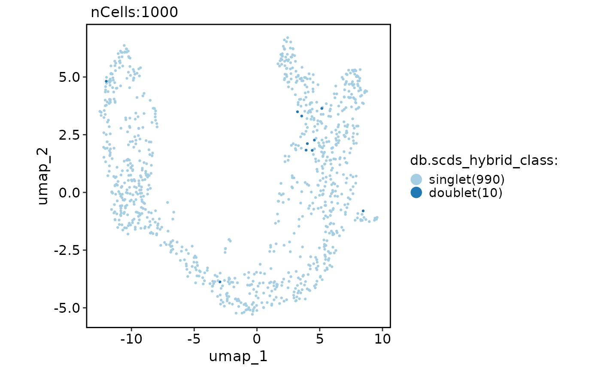
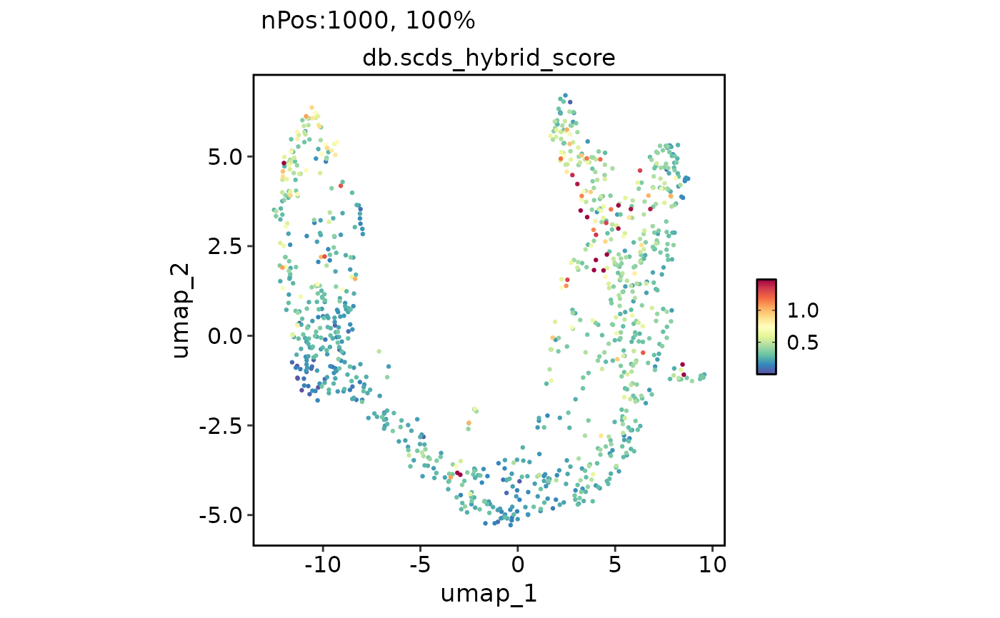

This function performs doublet-calling using the scds package on a Seurat object.
Arguments
- srt
A Seurat object.
- assay
The name of the assay to be used for doublet-calling. Default is "RNA".
- db_rate
The expected doublet rate. Default is calculated as ncol(srt) / 1000 * 0.01.
- method
The method to be used for doublet-calling. Options are "hybrid", "cxds", or "bcds".
- ...
Additional arguments to be passed to scds::cxds_bcds_hybrid function.
Examples
data("pancreas_sub")
pancreas_sub <- db_scds(pancreas_sub, method = "hybrid")
CellDimPlot(pancreas_sub, reduction = "umap", group.by = "db.scds_hybrid_class")
#> Warning: No shared levels found between `names(values)` of the manual scale and the data's fill values.

FeatureDimPlot(pancreas_sub, reduction = "umap", features = "db.scds_hybrid_score")
